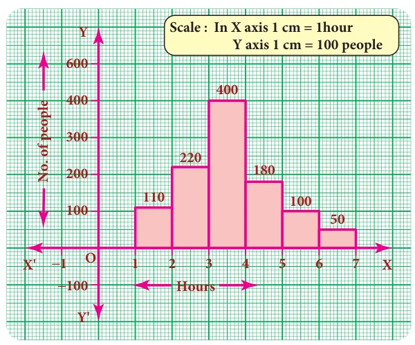
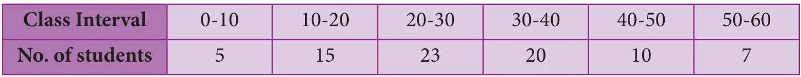
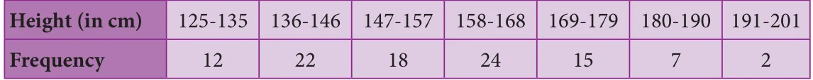
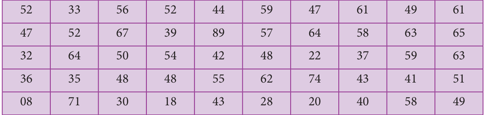

Exercise 6.2
- Which of the following data can be represented in a histogram?
- The number of mountain climbers in the age group 20 to 60 in TamilNadu.
- Production of cycles in different years.
- The number of students in each class of a school.
- The number votes polled from 7 am to 6 pm in an election.
- The wickets fallen from 1 over to 50th over in a one day cricket match.
- Fill in the blanks:
- The total area of the histogram is \(\underline{\qquad}\) to the total frequency of the given data.
- A graph that displays data that changes continuously over the periods of time is \(\underline{\qquad}\) .
- Histogram is a graphical representation of \(\underline{\qquad}\) data.
- In a village, there are 570 people who have cell phones. An NGO survey their cell phone usage. Based on this survey a histogram is drawn. Answer the following questions.

- How many people use the cell phone for less than 3 hours?
- How many of them use the cell phone for more than 5 hours?
- Are people using cell phone for less than 1 hour?
- Draw a histogram for the following data.

- Construct a histogram from the following distribution of total marks of 40 students in a class.

- The distribution of heights ( in cm ) of 100 people is given below. Construct a histogram and the frequency polygon imposed on it.

- In a study of dental problem, the following data were obtained.

Represent the above data by a frequency polygon.
- The marks obtained by 50 students in Mathematics are given below (i) Make a frequency distribution table taking a class size of 10 marks (ii) Draw a histogram and a frequency polygon.

Objective Type Questions
- Data is a collection of \(\underline{\qquad}\)
(A) numbers (B) words (C) measurements (D) all the three
- The number of times an observation occurs in the given data is called \(\underline{\qquad}\)
(A) tally marks (B) data (C) frequency (D) none of these
- The difference between the largest value and the smallest value of the given data is \(\underline{\qquad}\)
(A) range (B) frequency (C) variable (D) none of these
- The data that can take values between a certain range is called \(\underline{\qquad}\)
(A) ungrouped (B) grouped (C) frequency (D) none of these
- Inclusive series is a \(\underline{\qquad}\) series.
(A) continuous (B) discontinuous (C) both (D) none of these
- In a class interval the upper limit of one class is the lower limit of the other class. This is \(\underline{\qquad}\) series.
(A) inclusive (B) exclusive (C) ungrouped (D) none of these
- The graphical representation of ungrouped data is \(\underline{\qquad}\)
(A) histogram (B) frequency polygon (C) pie chart (D) all the three
- Histogram is a graph of a \(\underline{\qquad}\) frequency distribution.
(A) continuous (B) discontinuous (C) discrete (D) none of these
- A \(\underline{\qquad}\) is a line graph for the graphical representation of the continuous frequency distribution.
(A) frequency polygon (B) histogram (C) pie chart (D) bar graph
- The graphical representation of grouped data is \(\underline{\qquad}\)
(A) bar graph (B) pictograph (C) pie chart (D) histogram